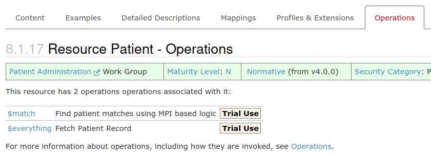

Operations
This tutorial will give you an overview of Operations in the FHIR specification
Contents
Step 1: What are Operations Step 2: Operations input parameters Step 3: Operations output parameters Step 4: Custom OperationsStep 1: What are Operations
In the Simple Patient tutorial, we looked at interacting with the FHIR server using the CRUD actions (Create, Read, Update and Delete). Operations extend on these basic actions to provide unique functionality where required. For instance, the operation $validate can check a provided resource is acceptable to the server before you attempt to upload it. $translate can map one code to another using a ConceptMap. You can find a full list of the operations defined by the FHIR specification here: FHIR defined Operations and for operations that are particular to a given FHIR resource, you will find an operation tab at the top of the given resource's page.
Operation tab as seen on the Patient resource page
Let's jump straight in and look at some operation syntax examples. The basic concept of operations is much like a function in programming. An operation has an 'Operation Name' (e.g. $meta, $everything) which are always prefixed with a dollar sign '$' and operations are run in one of three context, them being:
Against the entire FHIR server:
Given me the meta-data for the entire FHIR server
Syntax:
[Service Root URL]/[$Operation Name]
Example:
http://www.acmehealth/fhirapi/$meta
Against a type of resource:
Given me the meta-data for a given resource type (Patient)
Syntax:
[Service Root URL]/[Resource Type]/[$Operation Name]
Example:
http://www.acmehealth/fhirapi/Patient/$meta
Against a single resource instance:
Given me all resources (everything) for the Patient resource with the given resource id of (123456)
Syntax:
[Service Root URL]/[Resource Type]/[Resource Id]/[$Operation Name]
Example:
http://www.acmehealth/fhirapi/Patient/123456/$everything
Operations can also have any number of input and output parameters. We will look at input parameter next.
Step 2: Operations input parameters
There are two different ways to pass input parameters to an operation on a FHIR server. Generally, the POST action is used and the parameters are given in the HTTP body as a Parameters resource. Take a look at the Parameters resource in the FHIR specification now to get a feel for its contents. In essence, it is a simple resource containing value pairs (key, value) where value may be a FHIR data type or a whole resource. The point to take home here is that the Parameters resource allows you to pass in complex data types and whole resources as parameters.
The other way to pass input parameters into operations is by using an HTTP GET and putting the parameters in the GET URL string as seen in the following examples:
Syntax: [Service Root URL]/[Resource Name]/[$OperationName]?[OpParameterName1=value]&[OpParameterName2=value]..etc.
The $match operation can be given on a Patient resource type using a number of input parameters:
Give me all the Patient resources that match on the patient demographic parameters (family, given, birthdate)
Example: http://www.acmehealth/fhirapi/Patient/$match?family=chalmers&given=peter&birthdate=1974-12-25
Activity: Find in the FHIR specification documentation the $match operation and answer; what other input parameters can this operation take and what is its output?
So when do you use each - Parameters in the URL string or parameters in the body using the Parameters resource?
For some operations, you can use either option as long as the server supports both, for instance, the $lookup operation on a CodeSystem resource can be performed using both methods. Yet sometimes you must use the Parameters resource and HTTP POST rather than the parameters in the URL string and GET. One of the key reasons for this is due to the parameters you need to pass into the operation. If one of them is a whole Resource or a complex datatype then you must use the Parameters resource as you are unable to place a whole resource or complex data type in an URL string. The other reason is that an operation must be 'Idempotent' to use a GET action.
What the; Idempotent?
Idempotent: An Idempotent operation can be applied multiple times without changing the result beyond the initial application. For example, if I make a call to delete a resource the action is said to be 'Idempotent' because if I repeat the very same call many times, no further changes occur, the resource just remains deleted as it did on the first call.
Step 3: Operations output parameters
The output of an operation is somewhat the same as the input. If the operation was successful a HTTP status code of 200 OK will be returned along with either a Parameters resource or you may get a whole resource returned depending on the operation. If an error is encountered by the server you will receive an OperationOutcome resource and an HTTP status code of 4xx or 5xx. Not all operations are alike so browse the full list to get a feel for inputs and outputs of each.
Step 4: Custom Operations
While the FHIR specification outlines a set of operations, there is no requirement that any given server support these operations. In order to work out which operations a server supports you will need to inspect the servers Conformance resource to see which OperationDefinition resources it lists as supported. The OperationDefinition resource is used to define an operation, what the opertaion does and the inputs and outputs it uses.
Servers are also allowed to offer their own custom operations. Each of these should be defined in that servers Conformance resource by an OperationDefinition resource. A server can even extend onto an existing operation with new input and output parameters, once again all of these need to be stated in the appropriate OperationDefinition.
Activity: Using a post client GET your servers Conformance resource and identify the operations it supports?
Tip GET: [Service Root URL]/Conformance